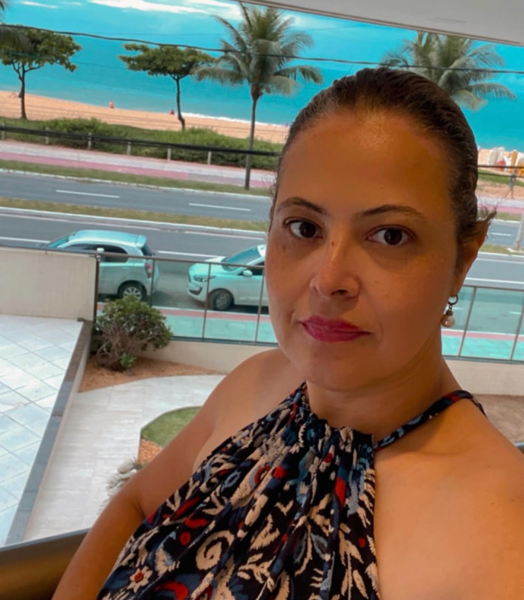

GDI Soluções Integradas
Diretora de Operações
Gestão documental, coordenação de operações, acervos e projetos de digitalização com validade legal.
Conheça minha empresa
PERFIL PROFISSIONAL
Diretora de Operações | Gestão da Informação | Tecnologia
Vila Velha — Espírito Santo
Diretora de Operações da GDI Soluções Integradas, com trajetória em administração, gestão documental e coordenação de operações. Atuo na gestão do arquivo geral da operação Coca-Cola FEMSA e na coordenação de projetos de digitalização com validade legal de acervos legados em São Paulo, Paraná, Rio de Janeiro, Minas Gerais e Mato Grosso do Sul. Sou graduada em Administração de Empresas, pós-graduada em Controladoria e Finanças e estudante de Sistemas de Informação na UVV. Minha atuação conecta organização da informação, gestão de equipes e tecnologia aplicada aos processos documentais.
Gestão documental, coordenação de operações, acervos e projetos de digitalização com validade legal.
Conheça minha empresaInício da primeira empresa na área de gestão documental.
Progressão profissional na área documental e administrativa.
Ingresso por meio da Polícia Mirim de Araçatuba. Permaneceu na instituição até 2005.
Minha formação reúne administração, finanças e tecnologia.
| Período | Curso e instituição | Situação |
|---|---|---|
| 2026 — Atual | Sistemas de InformaçãoUniversidade Vila Velha (UVV) | Em andamento |
| 2012 — 2014 | Pós-graduação em Controladoria e FinançasPUCPR | Concluída |
| 2008 — 2011 | Administração de EmpresasFANEESP | Concluída |
| 2002 — 2005 | Ciência da ComputaçãoFaculdades Thathi / COC | Interrompida |
Gestão da informação, gestão documental, organização de acervos, coordenação de projetos, processos administrativos, fiscais e tributários. Conhecimentos acadêmicos em HTML, CSS, lógica computacional, banco de dados e UX.
Ponte do Bem — portal de doações; Landing Page Pessoal — projeto em HTML e CSS.
Unir experiência em gestão da informação e operações empresariais aos conhecimentos de Sistemas de Informação para desenvolver soluções digitais e melhorar processos organizacionais.
Leia a trajetória completa →EM BREVE
Projeto de uma empresa dedicada ao desenvolvimento de softwares para gestão documental, contabilidade, gestão de pessoas e outsourcing. A proposta conecta minha experiência em gestão e operações à formação em Sistemas de Informação, com foco em ferramentas que organizem informações, automatizem rotinas e apoiem a eficiência das empresas.
Conheça a proposta da GDITech →Para assuntos da GDI, utilize meu e-mail profissional ou o WhatsApp.